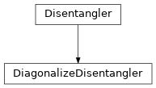

DiagonalizeDisentangler¶
full name: tenpy.algorithms.purification_tebd.DiagonalizeDisentangler
parent module:
tenpy.algorithms.purification_tebdtype: class
Inheritance Diagram

Methods
|
Initialize self. |
-
class
tenpy.algorithms.purification_tebd.DiagonalizeDisentangler(parent)[source]¶ Bases:
tenpy.algorithms.purification_tebd.DisentanglerDisentangle by diagonalizing the two-site density matrix in the auxiliar space.
See arXiv:1704.01974. Problem: Sorting by eigenvalues breaks the charge conservation! Instead we just sort within the charge blocks. For non-trivial charges, this might increase the entropy!
Arguments and return values are the same as for
Disentangler.